第六章｜AIGC应用与实践 · 第23次课 · 2 学时
AI项目架构：从工业级规范到极简落地
00 知识回顾
上一课把模型处理、脚本执行和保存步骤写进工作流，能够再次处理商品咨询。这一课把方法用到网站开发：让客户需求、页面代码和图片各有位置，接到修改要求时继续改已有项目。
01 任务预告
本课成果：一个能在本地打开的商家展示网站，包含一个有效交互，完成一次客户需求变更，并能在新会话中继续修改。
教师为“毛球洗护”制作猫犬洗护展示网站；你选择一家商家，确定页面风格，生成网站，再根据客户的新要求修改。浏览器中能看见商家介绍、服务或商品、图片和咨询说明；点击分类会改变显示内容，手机宽度也能阅读。
本课使用WorkBuddy和本地浏览器。商家、套餐与报价均为课堂模拟；页面不接收真实预约、不付款。项目规则、客户需求、代码、图片和使用说明分别保存，不要求为小网站增加没有用途的日志与记忆目录。
02 基础概念
1｜从单次对话到工程项目：为什么要安排文件架构
一次对话适合临时问答；需要反复运行、多人接手或持续修改时，还要把材料、规则、工具与成果保存成能找到、能重新使用的项目。项目架构就是安排这些文件的职责和相互关系：什么是输入依据，什么负责执行，什么保存进展，什么是最终交付。
如果把提示词、客户资料、脚本和生成文件都混在一个目录或一段聊天里，常见问题有三类：
- 重要要求难以持续保留。 对话越来越长时，最初要求可能没有被完整带入后续处理；新会话也不一定知道上一轮确认了什么。需要把关键规则和已确认事实写入项目文件，并在继续工作时明确读取。
- 修改位置不清楚。 同一功能出现多个副本，代码、提示词和资料混放，接手者难以判断哪个文件应修改、哪个是旧稿。
- 过程文件与正式成果混淆。 临时切片、调试草稿和交付文件没有分开，容易把草稿当成最终结果，或在清理时误删仍有用途的资料。
文件架构的作用是减少这些混淆，让任务能够复用和交接。它不是文件夹越多越专业；仅有清晰目录，也不能保证AI一定读到资料、代码一定正确或文件不会被误删，仍要让实际操作与规则对应。
2｜完整项目架构：八类职责怎样分开
当项目包含多步流程、多类资料、执行脚本、持续状态和多人交接时，可以把职责分成八类。下面是便于理解复杂AI项目的一种教学示例，不是行业统一规定的八个模块；实际项目可按需要合并、拆分或换名。README.md 是配套的公共项目说明，不计入这八类职责。
my-ai-agent-project/
├── AGENTS.md AI操作项目时遵守的规则
├── README.md 配套说明：用途、打开方式与依赖
├── 工作流/ 多步任务的顺序与输入输出约定
│ ├── 01-数据初筛SOP.md
│ └── 02-报表生成流程.md
├── 知识库/ 业务资料、规范、模板与参考依据
│ ├── 行业术语对照表.xlsx
│ └── 周报格式模板.md
├── 脚本仓库/ 可以运行的计算与操作工具
│ ├── weekly_guard.py
│ └── data_cleaner.py
├── memory/ 提炼后的偏好、进度与任务状态
│ ├── user_profile.json
│ └── project_milestones.md
├── 对话记录/ 原始会话、运行日志与排错记录
│ └── session_20261026_01.jsonl
├── 交付成果/ 已确认的正式报告、网页等成果
│ └── 本周业务分析看板.html
└── 中间文件/ 临时切片、清洗草稿与调试文件
└── raw_cleaned_temp.json
| 八类职责 | 主要放什么 | 要解决的问题 |
|---|---|---|
项目规则 AGENTS.md |
操作范围、保留项、工具选择与修改要求 | AI处理文件时知道应遵守哪些约定；它不代替真实权限控制 |
| 工作流 | 步骤顺序、提示词编排、每步的输入与输出 | 多步业务按约定衔接，而不是每轮重新描述流程 |
| 知识库 | 业务文档、术语表、规范与模板 | 给出可查的事实依据；仍须判断资料是否适用、是否过期 |
| 脚本仓库 | 数据清洗、计算、校验与文件操作代码 | 把适合确定执行的操作交给程序，并能重复运行 |
长效状态 memory |
用户偏好、已完成阶段、确认结论与待办 | 下次继续时读取关键状态，不必从全部聊天重新整理 |
| 对话与运行记录 | 原始消息、执行回执、错误信息 | 出错时能追查处理经过，区分实际执行与口头计划 |
| 交付成果 | 已确认的正式文档、网页或数据结果 | 接收者知道哪一份是本次可用成果 |
| 中间文件 | 临时提取内容、切片、调试草稿 | 过程文件不与正式成果混淆；清理前仍要确认范围和恢复方式 |
例子： 周报任务先从知识库读取格式和业务资料，按工作流决定步骤，调用脚本统计数据，再把报告写入交付成果。若本周只完成了部分处理，可在状态文件里写清进度；执行失败的原因则保留在运行记录中。
3｜设计原则：规则、执行、资料与成果各有边界
原则一｜先明确规则，再执行具体操作
客户需求说明最终要看到什么，包括服务内容、交互和报价；项目规则说明AI如何操作这些文件，例如保留原图片、只改相关模块、更新已确认的需求。AGENTS.md 是本课存放项目规则的文件，brief.md 保存客户需求。使用时明确让WorkBuddy读取它们，不把文件存在等同于AI已经采用规则。
例子： “新增大型犬套餐159元”写入 brief.md；“套餐数据集中维护，不重做整页”写入 AGENTS.md。规则文件用于指导AI，不能代替文件权限或自动拦截机制。
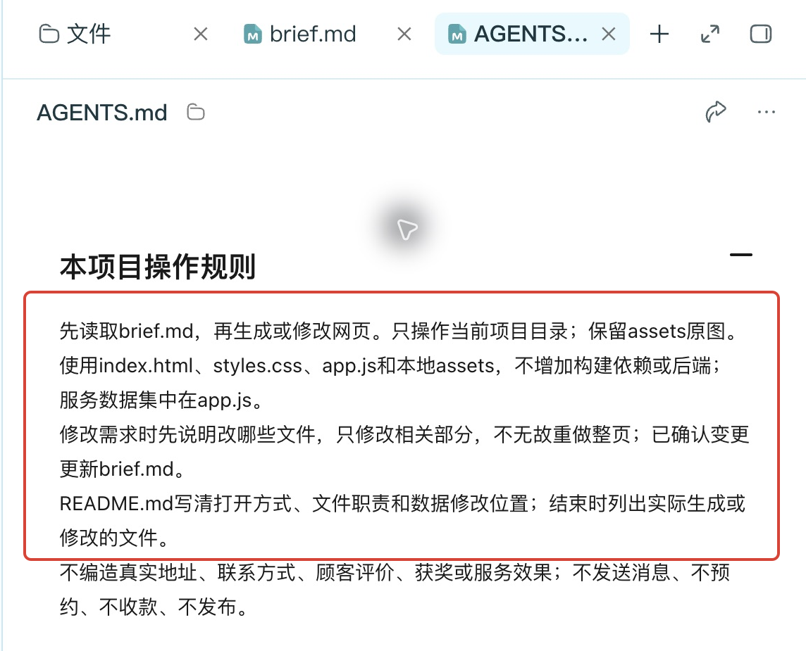
在右侧“文件”页签打开 AGENTS.md，看“只修改相关部分”和“将已确认的变更更新到 brief.md”两条规则；它们说明修改方式，具体套餐与报价仍以客户简报为准。
原则二｜模型处理语言，程序执行可明确的计算与操作
模型适合理解需求、提取语义、提出方案和组织表达；适合精确计算、批量处理和重复校验的部分，可写成脚本或调用工具。工作流负责约定先后顺序，脚本负责执行其中明确的一步。两者分工后，出错时更容易定位是材料、规则、计算还是表达出了问题。
例子： 周报里“哪些咨询属于同一类”可能需要模型理解语义；每类有多少条、是否满足给定条件，可以由脚本按明确规则统计。脚本仍可能写错，所以要检查输入、处理规则与实际输出，不能只因用了代码就认为结果正确。
原则三｜参考资料与运行状态分开
知识库主要放供任务查阅的业务资料与模板；状态文件主要放当前进度、已确认选择和下一次从哪里继续。“静态资料”指它主要作为参考输入，并不表示永远不更新；“动态状态”指它随着项目推进而改变。
例子： 周报模板放知识库，本周处理到哪一天、哪些记录已处理放状态文件。宠物店客户的新报价属于需求变更，应更新 brief.md；不能只把它留在聊天里，随后仍按旧简报改价。
原则四｜正式成果与中间过程分开
正式成果是准备交给接收者使用的文件；临时切片、排错草稿和试验输出属于过程文件。分开保存后，交付时不容易拿错，修订时也能追溯来源。划为“中间文件”不等于可以直接删除，仍要先核对用途、保留项与恢复方式。
例子： 同一份周报的正式文档放入 final，清洗后的临时JSON放入 .temp。网站任务保留实际需要打开的HTML、CSS、JavaScript和本地图片；不能只交一个缺少依赖文件的网页。
4｜教学实训精简架构：合并为五类核心职责
完整架构便于看清职责，但小项目未必需要分别建八个位置。对于需要资料、脚本和持续状态的实训项目，可以把相近内容合并为五类核心职责，并保留配套的 README.md。精简的是管理层级，不是把输入、处理、状态和成果混成一堆。
my-ai-agent-project/
├── AGENTS.md 项目规则与操作边界
├── README.md 配套说明：用途、打开方式与依赖
├── 知识库/ 业务资料与文本流程
│ ├── 行业术语对照表.xlsx
│ └── 周报生成SOP.md
├── 脚本与工具/ 可以运行的脚本和流程执行代码
│ ├── weekly_guard.py
│ └── pipeline_runner.py
├── 记忆与日志/ 状态和日志同组、分开保存
│ ├── state.json 当前进度、偏好与确认结论
│ └── logs/ 原始会话和运行日志
└── 成果交付/ 成果和过程同组、分开保存
├── final/ 正式成果
└── .temp/ 临时切片与调试草稿
| 五类核心职责 | 由哪些职责合并 | 合并后怎样保持清楚 |
|---|---|---|
项目规则 AGENTS.md |
项目规则 | 写操作约定；用途和打开方式仍由README说明 |
| 知识库 | 参考资料＋文本形式的工作流 | 模板、业务规范、SOP和提示词都作为文档保存 |
| 脚本与工具 | 执行脚本＋代码形式的工作流 | 程序和流程驱动代码集中维护，不复制多份执行入口 |
| 记忆与日志 | 提炼状态＋原始记录 | state.json 保存关键状态，logs 保存原始流水 |
| 成果交付 | 正式成果＋临时过程文件 | final 与 .temp 分开，交付时明确需要携带哪些依赖 |
本课的商家网站更轻：用 brief.md 保存需求与变更，用 README.md 保存打开方式和修改位置即可。了解五类职责，不代表必须把网站改成这棵目录树，也不额外要求创建 state.json。只有确有跨次处理进度、运行记录等需求时，才增加相应文件。
5｜为什么这样合并：分清两组容易混淆的内容
状态与日志：一份是摘要，一份是原始经过
聊天历史和“记忆”在不同工具中可能有不同叫法，判断时看文件保存的实际内容。日志记录某次对话说了什么、程序执行了什么、出现什么错误；状态保存下一次继续工作必需的简明信息。把全部聊天复制成JSON，不等于已经提炼了任务状态。
例如，logs 可以保留周报处理的完整执行经过；state.json 只保存已处理到哪个日期、当前周期、经确认的偏好等。新会话需要明确读取状态，必要时再查日志；不会仅因为文件名叫 state.json 就自动获得记忆。
宠物店改价也一样：已确认的新报价应写进 brief.md，打开与修改方法写进 README.md。新任务先读这些文件，再检查现有代码，才能判断哪一条价格应改、哪些旧功能要保留。
工作流与脚本：一份说明顺序，一份实际执行
工作流描述业务步骤及其衔接；脚本是执行具体操作的程序。工作流可能写成文字，也可能由代码实现，因此文件名里有“流程”并不能决定它放在哪里。
在这套精简示例中，能直接运行的 .py、.sh、.mjs 放入“脚本与工具”；文本SOP、规范和提示词模板放入“知识库”。如果一个Python文件按顺序完成清洗、统计和保存，它既承担流程驱动也承担代码执行职责，仍按可运行代码管理，不必复制到两个目录。
这样做是在同一位置集中维护相关内容、减少无关部分的相互影响，也就是常说的高内聚、低耦合。判断是否做到，仍看一次修改是否找得到位置、是否需要连带重做无关部分。
6｜用输入—处理—输出理解整个项目
IPO是输入（Input）、处理（Process）、输出（Output）的基本思路。AI项目还可能需要保留跨次运行的状态；状态不是每次必做的第四步，而是后续处理会再次读取和更新的信息。
| 角色 | 对应内容 | 在任务中看什么 |
|---|---|---|
| 输入 | 知识库、客户简报、原始材料 | 这次根据哪些事实与要求工作 |
| 处理 | 规则、工作流、模型与执行工具 | 按什么约定、用什么方法完成任务 |
| 输出 | 正式文档、网页或数据结果 | 接收者最后能打开和使用什么 |
| 跨次状态 | 已确认需求、处理进度与必要状态文件 | 下一次从哪里继续，哪些内容不应重复处理 |
网站例子： brief.md 和图片是输入；AI依据规则编写及修改代码，浏览器执行代码；顾客看到的页面和交互是输出。客户确认的新价格更新到简报，后续任务再读简报和现有代码。项目架构因此与实际工作相连，不是单纯背文件夹名称。
7｜页面、样式和数据分开：一次修改只影响相关部分
HTML负责页面结构，CSS负责外观，JavaScript负责数据和交互。将它们分开后，可以把“标题太小”和“价格不对”定位到不同文件。这里的“数据集中”是把套餐名称、类别、价格和内容集中写在 app.js 的一组数据中，页面再根据这组数据生成套餐卡片。
例子： 点击“猫”后，JavaScript只显示类别为猫的套餐；再点击“犬”会换成犬套餐。按钮变色只是选中提示，套餐内容发生变化才说明筛选起作用。更改主色主要调整 styles.css；新增套餐主要调整 app.js，必要时再补对应页面逻辑。
本课采用原生网页和本地图片。双击 index.html 即可打开；不通过 fetch 读取本地JSON，也不依赖在线字体、图片或软件安装命令。
8｜项目交接：让下一次修改有依据
新会话没有上一段聊天的完整背景。把已确认需求保存在 brief.md，把打开方式和修改位置写进 README.md，下次先读项目文件，就不必再描述整个网站。真正要观察的是AI是否找对文件、保留旧功能并完成新要求，而不是只回复“已理解”。
例子： 新会话读取三份说明后，将犬基础洗护改为79元。改价后猫套餐仍是99元和139元，新增的大型犬套餐仍在，说明修改针对现有项目继续进行。
03 核心案例
教师示范｜为“毛球洗护”开发展示网站
客户简报（课堂模拟）： 店主希望顾客用手机查看猫犬洗护服务。页面需要门店介绍、洗护套餐、环境展示、营业与咨询说明；采用奶油白配深绿的温暖风格。图片是宠物与照护情境参考，不宣称为真实门店实拍。
| 宠物类别 | 初版套餐 | 模拟报价 | 展开后显示 |
|---|---|---|---|
| 犬 | 犬基础洗护 | 69元 | 基础清洁、吹干、梳毛 |
| 犬 | 犬精细洗护 | 99元 | 基础洗护、细致梳理、足部清洁 |
| 猫 | 猫基础洗护 | 99元 | 基础清洁、吹干、梳毛 |
| 猫 | 猫精细洗护 | 139元 | 基础洗护、细致梳理、足部清洁 |
交互要求： 点击“猫／犬”只显示对应套餐，选中状态清楚；点击套餐展开服务内容。页面注明“课堂模拟门店，未开放真实预约”，不编造电话、地址、顾客评价。
案例中的项目架构｜接到修改要求时，知道改哪里
项目架构是安排文件职责和相互关系的方法。对本课的网站来说，先把“客户要什么”“AI修改时遵守什么”“页面如何显示”和“图片放哪里”分清，就能减少把价格改错位置、修改时丢掉原功能等问题。企业项目可能有服务器、数据库、部署等更多部分；本课只保留本地展示网站需要的文件，不把某一种目录数量当成行业统一标准。
例子： 客户将犬基础洗护从69元改为79元。套餐数据集中在 app.js，AI就应定位这一条数据；页面布局和图片无需一起重做。
maoqiu-site/
├── AGENTS.md AI修改项目时遵循的操作规则
├── brief.md 客户需求与已确认变更
├── index.html 页面栏目与内容结构
├── styles.css 颜色、字号、间距与手机布局
├── app.js 套餐数据、猫犬切换与展开逻辑
├── assets/ 本地图片
└── README.md 打开方式与常见修改位置
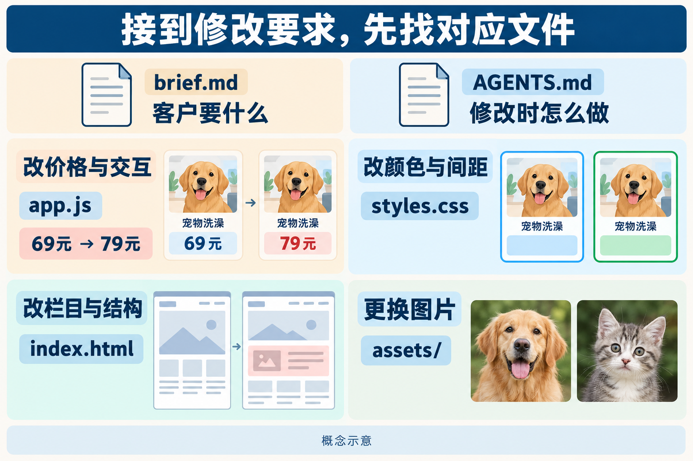
先看修改对象，再找对应文件：价格与筛选逻辑在 app.js，颜色与间距在 styles.css，栏目结构在 index.html。图片放在 assets；若替换图片时改变文件名，还要同步修改引用路径。
第一步｜选择工作目录，读取客户需求
下载第23课商家网站素材，将其中的“教师_宠物洗护店”复制为独立项目目录。在WorkBuddy新建任务，通过“选择工作空间”选中这个目录。目录里先有 AGENTS.md、brief.md 和 assets；同一网站的后续修改继续使用这个目录。
读取当前项目的 AGENTS.md、brief.md，查看 assets 中已有图片。
先用简短列表说明：页面有哪些模块，猫犬切换后显示什么，各文件分别负责什么。
使用 index.html、styles.css、app.js 和本地 assets；套餐数据集中在 app.js。
不增加后端、支付、真实预约或构建依赖。确认需求中没有缺少的必要内容后，继续生成网站。
页面预期是什么、文件分别做什么，可以先看这份简报和文件分工；不需要先创建八个文件夹。
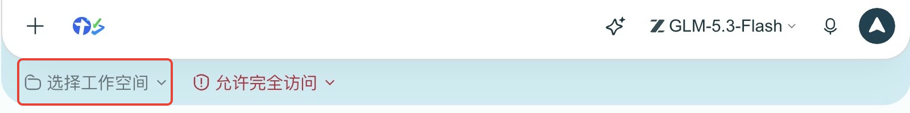
输入区下方的“选择工作空间”用于指定项目目录；后续任务继续选择同一目录。
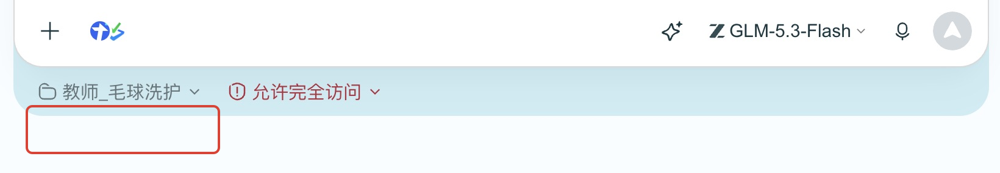
选中后，工作空间位置显示“教师_毛球洗护”这一目录名；若仍显示“选择工作空间”，先选目录，再发送任务。
在右侧面板选择“查看工作空间”，打开 brief.md，先找到四款套餐和猫犬切换要求，再让WorkBuddy读取文件并生成。
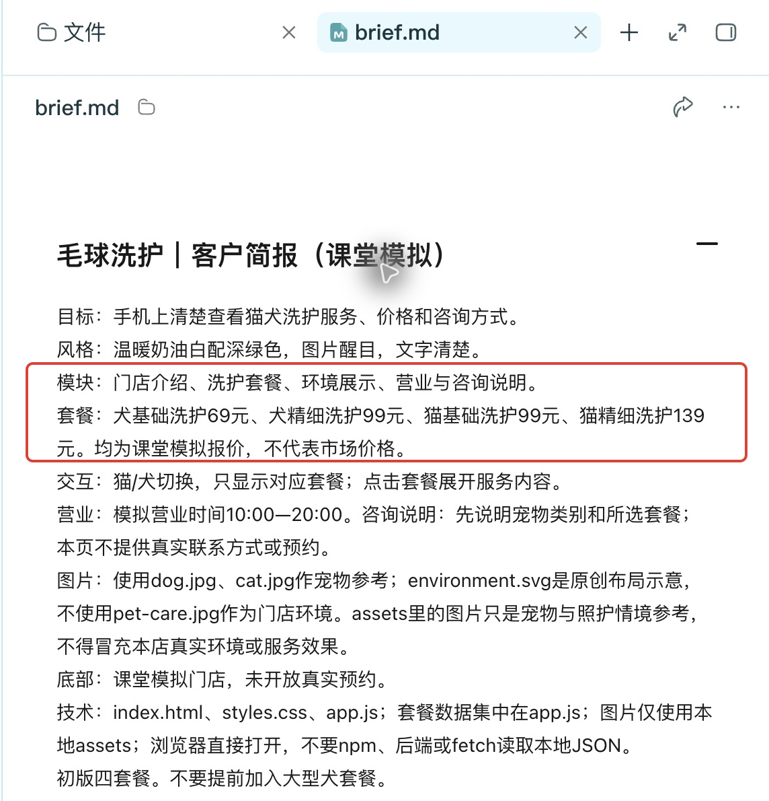
在简报中核对犬套餐69元和99元、猫套餐99元和139元；初版不含大型犬套餐。预览到文件只说明文件可查看，发送后还要看任务是否读取并实际写入网页文件。
第二步｜生成初版，在浏览器查看交互
按 brief.md 生成毛球洗护展示网站。
初版只包含四款套餐：犬基础69元、犬精细99元、猫基础99元、猫精细139元。
实现猫/犬切换，只显示对应套餐；套餐可展开查看服务内容。
保留门店介绍、环境展示与咨询说明，采用奶油白配深绿，电脑和手机都可读。
图片只使用 assets 中本地文件；参考图片不冒充门店实拍。
页面注明“课堂模拟门店，未开放真实预约”。不编造电话、地址或评价。
实际写入 index.html、styles.css、app.js，补齐 README.md，给出 index.html 的实际路径。
在文件管理器中打开项目目录，双击 index.html，分别点击“猫”和“犬”，再展开一款套餐。应看到两类套餐相互切换，价格与简报一致。手机预览时，套餐卡片可以排成一列。
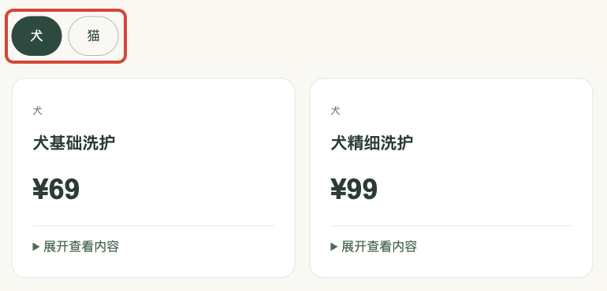
参考网站的犬分类显示69元和99元两款套餐。
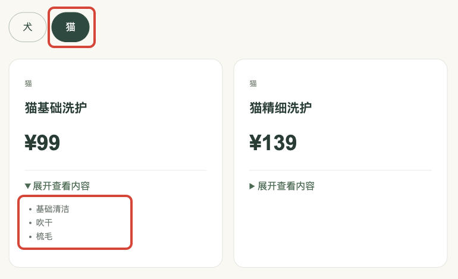
切到猫分类后显示99元和139元套餐；展开卡片可查看服务内容。
第三步｜客户新增套餐，在初版上继续修改
新要求： 增加“大型犬基础洗护159元”，服务内容为基础清洁、吹干与梳毛，只出现在犬分类；原有套餐、图片和风格保持。
客户确认新增“大型犬基础洗护”，159元，包含基础清洁、吹干、梳毛，只属于犬分类。
先指出这次需要修改哪些文件及原因，再实际修改；不重新生成整页。
把这条已确认变更追加到 brief.md；套餐数据继续集中在 app.js。
保留原来四款套餐和展开功能，给出改动文件及浏览器打开路径。
修改后，在右侧结果面板查看“变更”，打开实际改过的文件；本次套餐数据主要看 app.js，已确认需求看 brief.md。如果你的版本先显示“文件”页签，可先从文件列表打开它们。
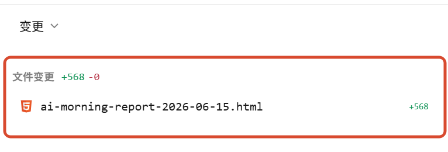
官方界面示例中的日报文件仅用于辨认“变更”面板和文件列表；在自己的项目里，核对套餐数据与简报的具体改动，再回浏览器看效果。
刷新页面：犬分类现在有三款，猫分类仍有两款。若新增套餐只在“全部”中出现而犬分类没有，回到 app.js 检查它的分类字段与筛选条件，而不是重做页面。
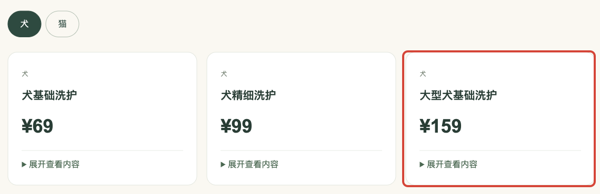
新增的大型犬套餐为159元，与原来两款犬套餐同时显示。
第四步｜新会话接手，完成一次小改价
先让WorkBuddy把“怎么打开、价格在哪里改、图片在哪里换、当前已完成什么”写进 README.md。随后新建任务，再次选择同一个工作目录。
先读取当前项目 AGENTS.md、brief.md、README.md，再检查现有代码。
客户把“犬基础洗护”从69元调整为79元；其他套餐价格、分类和页面风格不变。
请定位现有数据后修改，不重新搭建网站，并同步 brief.md 中的已确认报价。
实际保存后说明改动位置，给出打开路径。
刷新页面，犬基础洗护显示79元，大型犬仍是159元，猫套餐仍是99元和139元。这里延续的是项目文件中的需求与实现，不需要凭空建立 state.json 来表示“有记忆”。
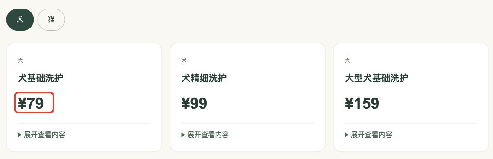
只调整犬基础洗护为79元，其他犬套餐仍为99元和159元。
04 实践任务｜完成一份商家网站商单
你的任务： 自选一家商家，用WorkBuddy完成本地展示网站，再接收一条修改需求。教师提供的《第23课商家网站素材》中有“理发店、摄影工作室、饮品店”三种客户简报和参考图片；也可自带同等规模的简报与有使用依据的图片。自带简报至少写清商家类型、服务或商品、一个交互和咨询说明。
| 可选商家 | 本课可做的交互 | 可选客户变更 |
|---|---|---|
| 理发店 | 按剪发／护理筛选服务 | 新增学生剪发；调整护理价格；增加造型分类 |
| 摄影工作室 | 按证件照／人像／合影切换套餐 | 新增毕业照；调整写真价格；增加产品摄影 |
| 饮品店 | 按果茶／咖啡筛选菜单 | 新增饮品；调整两款价格；增加奶茶分类 |
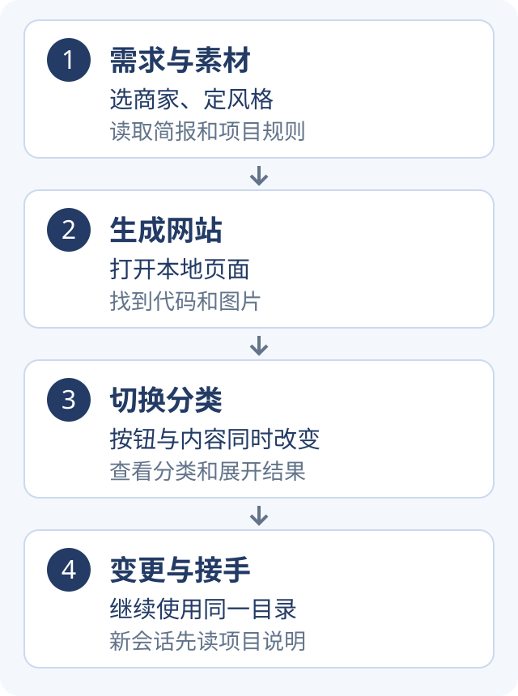
从自己的商家需求出发，先完成网站和交互，再处理客户变更。
操作①｜选择需求和图片，确定自己的风格
选择一个学生素材目录，复制到自己的工作位置，在WorkBuddy选择它作为工作空间。打开 brief.md，确定服务对象，再亲自选定主色、页面感觉与图片位置。不要只把教师店名换掉。
把提示词中的三处方括号替换成自己的选择：
读取当前项目 AGENTS.md、brief.md 和 assets 图片，开发这个商家的展示网站。
服务对象：[例如想快速看价目的年轻顾客]。
页面风格：[例如白底配墨绿，信息紧凑，价格醒目]。
图片安排：[例如顶部放一张参考图，服务区以文字卡片为主]。
把以上选择补充到 brief.md，明确页面模块与交互；随后按需求实际生成网站。
操作②｜生成可用网站，找到修改位置
按当前 brief.md 生成本地网站：index.html 负责结构，styles.css 负责外观，app.js 集中维护服务或商品数据与交互，assets 放本地图片。
包含商家介绍、服务或商品、图片展示、咨询说明四类信息。
双击 index.html 可以打开；不使用在线图片、在线字体、构建工具、后端或fetch读取本地JSON。
不编造真实联系方式、地址、评价或成交结果；课堂模拟页面注明未开放真实交易或预约。
生成 README.md，写明打开方式、价格与分类在哪里修改、图片在哪里替换。
给出实际保存位置。
打开网页，选择自己最需要改的一处，例如价格不醒目、手机标题换行不合适、图片抢占内容；向WorkBuddy说明具体位置、当前问题和期望变化，让它修改相关文件。
操作③｜完成一个会改变内容的交互
从分类筛选、套餐切换、作品分类中选择一个，下面以分类筛选为例。替换两个分类名称，其他选题照自己的内容调整。
在现有网站实现分类筛选：[分类一] 与 [分类二]。
每条服务或商品数据有明确分类；点击分类后，仅显示属于该分类的卡片，按钮显示当前选中状态。
数据继续集中在 app.js；如果初版已有该功能，就检查并修正现有实现，不增加重复按钮。
没有结果的分类显示“该分类暂未添加内容”，不留下空白区域。
保留其他模块与页面风格，完成后列出两次切换应出现的不同内容。
实际点击两个分类，看内容是否变化。只改变按钮颜色、卡片仍全部显示，不算完成筛选。若卡片始终不变，将浏览器中看到的现象告诉WorkBuddy，让它修正分类字段或筛选逻辑。
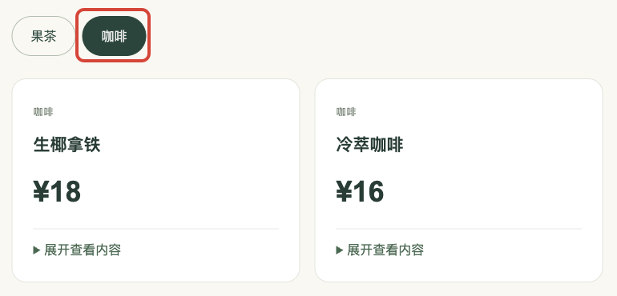
饮品参考网站切到咖啡后，只显示生椰拿铁和冷萃咖啡；果茶卡片不在这一分类中。
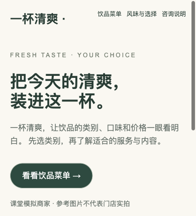
窄屏下查看导航、标题换行与说明文字是否排在页面内；不要把电脑截图缩小后当作手机布局。分类是否有效，仍需点击后观察内容变化。
操作④｜处理变更，交给新会话继续修改
从自己简报中的变更选一条：新增服务或套餐、调整一组价格、增加分类。把具体名称、价格或分类补入提示词，不只说“优化一下”。
客户确认以下变更：[填写一条具体的新要求]。
先读现有 brief.md 和代码，指出要改哪些文件，再完成修改。
保留原有模块、图片、服务数据及有效交互，不重新生成整页。
把确认后的需求更新到 brief.md，并补齐 README.md 中的修改位置说明。
保存后给出实际打开路径。
新建任务，选择同一项目目录，再提出一次小修改，例如某款价格调整或一个服务名称变更：
读取当前项目的 AGENTS.md、brief.md、README.md 后接手这个网站。
只完成这项修改：[写清一个服务的原值与新值]。
先定位现有文件，修改相关部分并同步 brief.md；其他功能和页面风格保持。
完成后说明改了哪个文件、哪个数据或模块。
成果集中查看：
| 达到什么程度 | 看什么 |
|---|---|
| 四类信息完整，图片与商家用途相符，电脑和手机都能阅读 | 内容与阅读 |
| 分类实际改变内容；新增需求已生效，原功能仍能使用 | 交互与变更 |
| 新会话能依据说明改对位置；你能指出需求、代码和图片分别放在哪里 | 项目可继续修改 |
| 基础要求是完整展示、一个有效交互与一次客户变更；提升空间在布局、交互准确性和修改质量，不在目录建得多不多。 |
05 本课总结
| 本课成果 | 自查 |
|---|---|
| 网站能够使用 | 浏览器可直接打开，四类信息和一个交互完整 |
| 修改有明确位置 | 能说明结构、样式、数据和素材分别在哪里改 |
| 客户变更保留下来 | 新要求进入客户简报，原有功能没有随意丢失 |
| 下次能够继续 | 新会话先读取项目说明，再定位现有文件完成小修改 |
下节预告： 通过定制营销素材、标准设计工具和企业AI客服三个案例，比较交付内容、服务范围与后续工作。